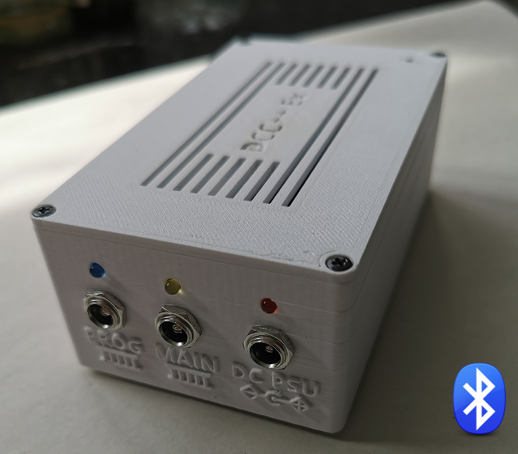
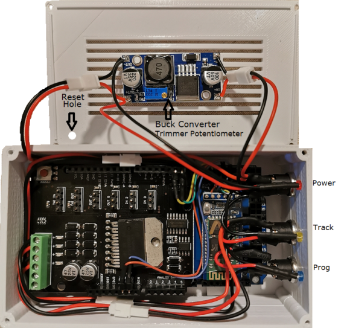

RailSnail’s Complete Blutooth DCC++EX Command Station¶
{kind=link}
UK User Chris (Railsnail) has created a great project you can build that will give you a complete DCC++EX Command Station that includes:
An Arduino Mega Microcontroller
An L298 Based Motor Shield
HC-O5 Bluetooth Module with mods for voltage level conversion
A 3D Printed Case
Details for powering and connecting Everything
You may have already seen the instructions for using WiFi for connecting a Controller to your Command Station (WiFi Setup), but many people have expressed the desire to use Bluetooth. For all the power and convenience there is when using your local area network, the fact is that it is complex. Debugging network issues can be a pain. While there are more WiFi Throttle options to connect to DCC++EX, there are still plenty of Bluetooth solutions such as DCCpp CAB. See our Throttle Section for more information.
This version is Bluetooth connected meaning that your railway layout may be controlled wirelessly from a suitable DCC App on a phone/tablet OR Bluetooth enabled PC/Laptop/Mac.
In keeping with the DCC++ Ex current design philosophy, the microcontroller board used in this design is the Arduino Mega2560 (or clone) and a snap-on Arduino Motor Shield to provide the DCC signals to the MAIN and PROG tracks.
The whole CommandStation is powered by one DC power supply (+15V DC) fitted with a 5.5mm x 2.1mm DC plug. A buck converter module (LM2596) reduces the input voltage to 7.5V DC to power the Arduino Mega2560.
{kind=link}
For complete details, see: